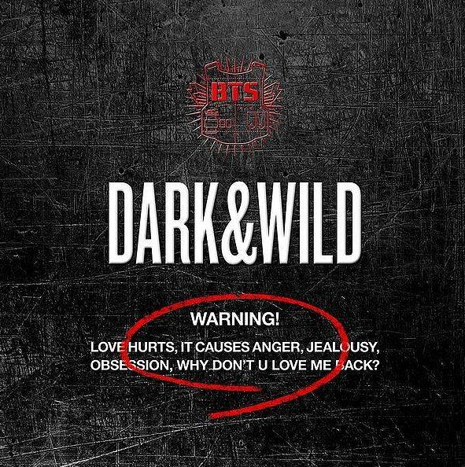

Хип-хоп группа BTS выпустила дебютный мини-альбом 2 COOL 4 SKOOL
Дебютный трек BTS "No More Dream"! Новый хип-хоп 90-х! "Какова твоя мечта"?
Это впечатляющая работа – результат твердой убежденности BTS в том, что хип-хоп музыканты должны выражать себя через свои треки. Участники сами создавали тексты, продюссировали музыку, лично работали над каждой песней в альбоме. «Хип-хоп – это подлинная музыка для рассказа собственной истории».
В текстах рассказаны личные переживания мемберов, поэтому лирика выходит яркой и эмоциональной.

В своем первом полномасштабном студийном альбоме BTS поют о любви, ставшей болью в DARK & WILD. Они предупреждают девушку, чувства которой остыли, не испытывать их любовь.
Мальчики больше не в школьной форме. Они повзрослели, стали жестче. Их тексты о том, что к любви нельзя относиться легкомысленно.
Треки, которые выделяют различные жанры хип-хопа - South, West, Boom Bap и Trap - обеспечивают четкое направление музыки BTS. Заглавный трек «Danger» представляет собой плотно составленную гибридную хип-хоп песню с пронзительным панк-роковым гитарным звучанием, отличающимся старк-рэпом, мощным крюком и волнующим криком.
WINGS – второй студийный альбом BTS. Эта история о том, как молодые люди встретили свой самый красивый момент в жизни и теперь стоят перед новой дверью. Они впервые сталкиваются с искушением, проверяют свою дружбу на прочность, прощаются с детством и выходят в новый большой мир. Словно птенцы, предвкушающие свой первый полет.
Альбом вошел в американский чарт Bilboard 200, что сделало его самым продаваемым корейским альбомом.
В 2017 к альбом перевыпустили с 4 новыми песнями как You Never Walk Alone. В новый список попал сингл Spring day, ставший одной из самых популярных песен группы. В альбоме много сольных композиций, которые позволяют раскрыть переживания каждого участника. Стиль группы отходит от хип-хопа, в нем появляются совершенно новые направления
Дальше выходит серия альбомов с общим названием LOVE YOURSELF. Из названия понятно, что тема композиций – любовь к себе, принятие себя таким, какой ты есть. В музыку заложены глубокие личные переживания участников. Проходя через боль, неприятие окружающих, ненависть и непонимание, человек меняется. Но важнее всего оставаться собой, быть личностью, которая не сдается под ударами судьбы. Группа поет о людях с мечтой, которая может привести к счастью, если дать ей шанс. Они переосмысливают себя, пытаясь понять, что для них важнее: быть артистом или быть человеком
Map of the soul – альбом, который во многом затрагивает отношения между участниками группы BTS. 7 членов группы выступают вместе уже 7 лет. Они не просто коллеги, они друзья, их связывают практически семейные узы. Этот альбом раскрывает потайные уголки их души, рассказывает о сильных эмоциях, страхах, пережитой боли. BTS продолжают мастерски играть с музыкальными направлениями. Полные эмоций, мальчики честно открываются перед слушателями. Они принимают «я, которое я хочу показать» и «я, которое я хочу скрыть» и готовы показать себя настоящих, без страхов и приукрашиваний